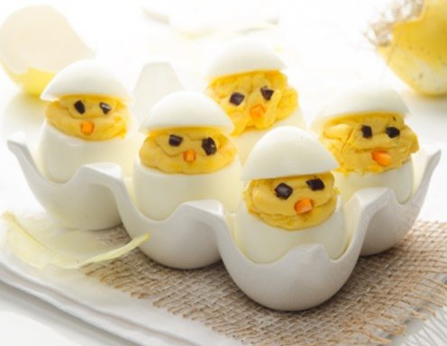

Gefüllte Eier-Küken

Diese Eier sind fast zu süss zum Verspeisen! Das Rezept eigenet sich perfekt zur Resteverwertung
von Ostereiern oder einfach als Hingucker bei der Osterjause
Kochzeit: ca. 15 bis 30 Minuten
Schwierigkeitsgrad: No Problemo
Kalorien pro Ei: In etwa 180kcal
Zutaten
Ihr benötigt die folgenden Zutaten für 6 Portionen des Rezeptes:
- 6 Eier
- 75g Mayonnaise
- 1 EL Senf (gestrichen, z. B. Dijon-Senf)
- Salz
- Pfeffer
- 1 Olilve (schwarz)
- 1/2 Karotte (klein)
Zubereitung
- Eier ca. 10 Minuten lang hart kochen (oder übrig gebliebene Ostereier verwenden).
- In der Zwischenzeit die Karotte schälen und kleine Dreiecke für den Schnabel
zurechtschneiden. Die Oliven für die Augen in kleine Quadrate schneiden.
- Die fertigen Eier ein wenig auskühlen lassen und schälen. Die Spitze großzügig
abschneiden und den Dotter vorsichtig herauslösen. Das geht am besten mit dem
Stiel eines Teelöffels.
- Den Dotter in einer Schüssel mit Mayonnaise und Senf vermischen. Eventuell etwas
mehr Mayonnaise hinzufügen, damit die Konsistenz cremiger wird. Mit Salz
und Pfeffer nachwürzen.
- Diese Füllung in einen Spritzsack mit runder Tülle füllen und in die ausgehöhlten Eier
einfüllen. Die Masse höher einfüllen als das Ei hoch ist.
- Je zwei Olivenstücke und eine Karotte zu einem Gesicht auf der Seite der Füllung setzen.
- Den Deckel des Eis darauf setzen.
Tipp
Für eine schlankere Variante können Sie die Mayonnaise mit Sauerrahm oder Joghurt mischen.
Als Alternative kann auch Frischkäse verwendet werden.
Für einen besonderen Geschmack, fein geriebenen, würzigen Käse in die Masse einarbeiten
(z.B. Greyerzer oder Parmesan).
Zurück zur Rezepte-Übersicht